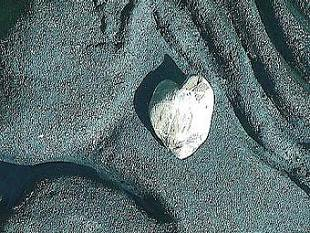

Susan McLean
For John
Here in this little room we rest, still glowing
from exertion, in the drawn shades’ gloom,
naked, content, not caring what we’re showing
here in this little room.
A breeze billows the shades; the faint perfume
of lilacs washes in, then ebbs, time slowing,
mired in honey, till its steps resume.
Yet even as we pause, I’m overthrowing
the tranquil privacy that you assume,
betraying you to different kinds of knowing,
here in this little room.
Stone
Offered bread,
I asked for a stone.
The stone was good,
but I ate alone.
I took my bows
in a hail of rocks
and built my house
of stumbling blocks.
But its walls are aligned
so true and tight
that they keep the wind
out, day and night.
Susan McLean is an English professor at Southwest Minnesota State University, and a lifelong fan of poetry in form. Her poems and translations of poetry have appeared in Measure, Hunger Mountain, Mezzo Cammin, and elsewhere.
|